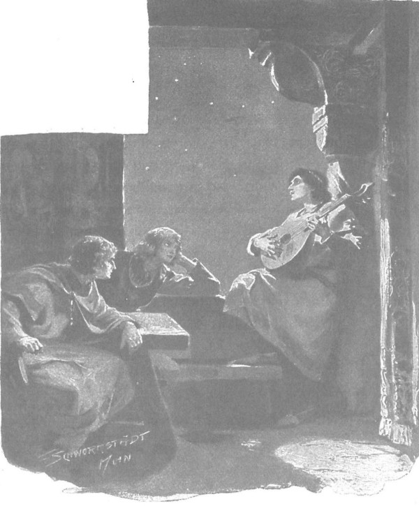

Zbyszko bị dằn vặt, bởi chìm sâu trong nỗi đau buồn mà chàng đã quên mất chuyên ông chú ruột thịt, và vốn có tính làm ngay những gì muốn làm, nên sáng tinh mơ hôm sau chàng lập tức lên đường đến Plock cùng hiệp sĩ de Lorche. Ngay cả trong thời bình, những nẻo đường biên giới không bao giờ an toàn vì lũ cướp, nhiều toán được quân Thánh chiến che chở và chống lưng, điều mà đức vua Jagiełło đã từng chỉ trích gay gắt. Mặc những lời phàn nàn bay đến tận thành Roma, mặc những lời răn đe và những án xử nghiêm khắc, các lãnh binh vùng cận biên thường vẫn để cho bọn lính của Giáo đoàn gia nhập cùng lũ cướp, và mặc dù chối bỏ những kẻ chẳng may rơi vào tay dân Ba Lan, nhưng chúng lại che giấu và hỗ trợ những kẻ đem những của cướp được trở về cùng với cả tù nhân, không chỉ trong các thôn ấp mà ngay tại các thành quách thuộc Giáo đoàn.
Bị rơi vào tay bọn cướp đường thường là các thương khách và cư dân biên giới, đặc biệt là con cái của những gia đình giàu có bị bắt cóc để đòi tiền chuộc. Nhưng hai hiệp sĩ trẻ có đoàn xe đông đảo, mỗi chiếc xe ngoài xà ích còn có cả tá gia nhân vũ trang đi bộ và cưỡi ngựa theo, không sợ bị tấn công, nên họ đến được thành Plock không gặp nguy hiểm gì, và ngay khi vừa đến đã có một điều bất ngờ dễ chịu chờ đợi họ.
Đó là họ gặp cụ Tolima tại quán trọ, người đã đến đây trước họ một hôm. Chuyện là do viên lãnh binh toán quân Thánh chiến ở Lubawa nghe tin vị sứ giả bị tấn công ở gần Brodnica đã kịp giấu bớt một phần tiền chuộc, nên giải ông về thành, nhờ lãnh binh buộc ông ta phải khai ra nơi giấu tiền. Cụ Tolima lợi dụng cơ hội để trốn thoát, và khi các hiệp sĩ ngạc nhiên hỏi cụ sao trốn thoát dễ dàng thế, cụ liền giải thích với họ:
- Tất cả cũng chỉ nhờ lòng tham của chúng. Viên lãnh binh Brodnica không muốn gây ồn ào về chuyện tiền nong nên không phái nhiều người canh giữ tôi. Có thể hắn đã thỏa thuận sẽ chia nhau tiền với viên lãnh binh thành Lubawa, nhưng lại sợ nhỡ tin tức lan ra sẽ phải nộp trả phần lớn số tiền về thành Malborg hoặc phải nộp toàn bộ cho anh em nhà von Baden. Vì thế hắn cử hai người đi cùng tôi, một là tay lính bộ mà hắn tin cẩn, người phải cùng tôi chèo thuyền trên sông Drwęca, người kia là một tay ký lục gì đó… Để cho không ai trông thấy, chúng phải đi ban đêm, mà các ngài biết đấy, biên giới thì sát bên. Chúng cũng đưa cho tôi một mái chèo gỗ sồi… và thế là nhờ ơn Chúa… tôi lại được ở Plock.
- Cháu hiểu là hai thằng kia sẽ không trở về! - Zbyszko thốt lên.
Nghe thế, nụ cười sáng bừng trên gương mặt nghiêm nghị của cụ Tolima.
- Thì sông Drwęca đổ vào sông Wisla mà. - Cụ nói. - Làm sao chúng trở về được từ đáy sông chứ? Có lẽ quân Thánh chiến ở mãi Toruń sẽ tìm thấy chúng.
Rồi lát sau cụ quay sang Zbyszko, nói thêm:
- Một phần tiền đã bị viên lãnh binh Lubawa cướp mất, nhưng tôi đã tìm lại được những gì tôi kịp giấu khi bị tấn công, thưa cậu chủ, tôi đã giao cho hộ vệ của cậu giữ, bởi anh ta ở trong lâu đài quận công, an toàn hơn tôi ở quán trọ.
- Thế ra hộ vệ của cháu đang có mặt ở Plock à? Hắn làm gì ở đây thế ạ? - Zbyszko ngạc nhiên hỏi.
- Sau khi đưa lão hiệp sĩ Zygfryd về, anh ta lại cùng với cô tiểu thư đã từng tá túc ở Spychow ra đi, bây giờ cô ấy là người của quận chúa nơi đây. Hôm qua anh ta bảo với tôi thế.
Zbyszko, người mà sau cái chết của Danusia đã như hóa câm điếc vì đau buồn, không hỏi và không biết bất cứ điều gì về trang Spychow, bây giờ mới sực nhớ lại rằng chàng trai Séc được phái dẫn lão hiệp sĩ Zygfryd về trước - và trái tim chàng lại bị bóp chặt bởi nỗi đau và sự căm hận.
- Đúng! - Chàng nói. - Thế giờ lão đao phủ đó đâu rồi? Chuyện gì đã xảy ra với lão?
- Cha Kaleb không nói gì với anh sao? Lão Zygfryd đã tự treo cổ, cậu chủ vừa đi ngang qua mồ lão ấy mà.
Một khoảnh khắc im lặng bao trùm.
- Tay hộ vệ có nói sẽ đến gặp cậu chủ, - mãi sau cụ Tolima lại cất tiếng, - lẽ ra anh ta đã đến từ nãy, nhưng còn bận chăm cô gái bị ốm sau khi rời Spychow.
Chợt tỉnh khỏi những ký ức đau buồn như thoát khỏi giấc mơ, Zbyszko hỏi:
- Cô gái nào kia?
- Tiểu thư là em gái hoặc người thân của cậu chủ, - cụ già đáp, - đã mặc trang phục giả trai đi cùng hiệp sĩ Maćko đến Spychow, trên đường đã tình cờ tìm được ông chủ của chúng tôi đang đi lang thang. Nếu không có cô ấy, chưa chắc ông Maćko và tay hộ vệ của cậu đã có thể nhận ra ông chủ. Ông chủ chúng tôi yêu mến cô ấy lắm, cô ấy chăm sóc ông ân cần như thể con gái ruột thịt, và ngoài linh mục Kaleb, chỉ một mình cô ấy mới hiểu được ý ông chủ.
Chàng hiệp sĩ trẻ ngạc nhiên mở tròn đôi mắt.
- Cha Kaleb không hề nói với tôi về cô gái nào cả, tôi cũng chẳng có người họ hàng nào như vậy…
- Cậu chớ nói thế, thưa cậu, là vì quá đau đớn mà cậu đã lẫn và không còn biết gì về thế giới của Chúa.
- Thế cô tiểu thư ấy tên gì?
- Người ta gọi cô ấy là Jagienka.
Zbyszko ngỡ như đang mơ. Đầu óc chàng không thể tưởng tượng được rằng Jagienka từ trang Zgorzelice xa xăm có thể đi đến tận Spychow. Và để làm gì chứ? Tại sao? Thực tình chàng không quên chuyện cô gái vui mừng khi gặp chàng và đã theo sát chàng hồi ở trang Zgorzelice, nhưng chàng đã nói thật rằng chàng là người đã có vợ - vì thế chàng không thể hình dung ra chuyện ông Maćko lại đưa cô về Spychow để cưới cô cho chàng. Cả ông Maćko và chàng trai Séc cũng không hề nói với chàng lời nào về cô gái… Câu chuyện này rất lạ, chàng không thể hiểu nổi, vì vậy, như chưa tin vào tai mình, chàng lại hỏi dồn cụ Tolima, muốn cụ nói lại cái tin đáng kinh ngạc ấy.
Cụ Tolima không thể nói gì hơn những điều đã nói, thay vì thế, cụ đi ngay vào thành để tìm kiếm tay hộ vệ, và trước khi mặt trời lặn, cụ dẫn chàng về. Chàng Séc vui mừng chào cậu chủ, tuy cũng rất buồn vì chuyện vừa xảy ra ở Spychow. Zbyszko cũng vui, bằng cả tâm hồn chàng cảm thấy rằng Hlava có một trái tim thân hữu và trung thành, điều con người cần nhất mỗi khi đau khổ. Trở nên hoạt ngôn và xúc động, Zbyszko kể về cái chết của Danusia, chia sẻ với chàng Séc nỗi buồn đau, sự tiếc thương và những giọt nước mắt, hệt như chia sẻ với đứa em trai. Chuyện đó kéo dài khá lâu, nhất là sau cùng, theo yêu cầu của Zbyszko, hiệp sĩ de Lorche hát lại khúc ca buồn thảm đã sáng tác cho người quá cố, hát với cây đàn luýt trong khi đang đứng nơi khung cửa sổ mở, mắt ngẩng lên nhìn những vì sao.
Mãi cho đến khi đã nguôi ngoai, họ mới nói về những điều đang chờ đợi họ ở Plock.
- Ta ghé vào đây trên đường đi đến thành Malborg, - Zbyszko nói, - bởi khi biết chú Maćko đang bị giam ở đó, ta phải đến để chuộc chú ấy ra.
- Dạ, tôi biết - Chàng Séc nói. - Ngài làm phải lắm, thưa ngài. Chính tôi cũng muốn đến Spychow để khuyên ngài về con đường đến Plock; đức vua đã tiến hành thương thảo với đại thống lĩnh tại Raciąz, khi ở bên cạnh đức vua ngài sẽ dễ nói hơn, vì trước uy nghiêm cung đình, bọn hiệp sĩ Thánh chiến không dám bướng bỉnh và phải giả vờ cư xử theo đúng đạo của người Ki-tô.
- Cụ Tolima nói rằng ngươi muốn gặp ta, nhưng vì cô Jagienka Zychówna bị ốm nên chưa đi được. Nghe nói chú Maćko đã đưa cô ấy tới đây, cô ấy cũng đã qua Spychow, phải không? Ngạc nhiên quá! Ngươi hãy nói xem, vì sao chú Maćko lại đưa cô ấy đi cùng từ Zgorzelice?

Hiệp sỹ de Lorche hát lại khúc ca buồn thảm đã sáng tác cho người quá cố
- Thưa, nhiều lý do lắm. Hiệp sĩ Maćko sợ rằng nếu để cô ấy lại không người chăm sóc thì các hiệp sĩ Wilk và Cztan sẽ tấn công Zgorzelice, và có thể làm hại bọn trẻ. Nếu cô ấy không ở đó thì sẽ an toàn hơn nhiều, vì ở Ba Lan, như ngài biết, quý tộc có thể bắt cóc một thiếu nữ, nhưng không ai dám động đến trẻ mồ côi, vì sẽ bị gươm của đao phủ chém đầu, mà còn mang nỗi nhục tệ hại hơn nữa kia! Cũng còn một lý do nữa là cha tu viện trưởng đã qua đời và tiểu thư là người thừa kế tài sản của cha, mà tài sản đó đang chịu sự bảo hộ của giám mục xứ này. Vì vậy, hiệp sĩ Maćko phải đưa tiểu thư đến Plock.
- Nhưng chú còn đưa cô ấy về Spychow nữa?
- Ông chủ đã phải đưa đi, vì không còn có ai để nhờ trông nom cô ấy, cả đức giám mục và ông bà quận công đều đi vắng. Thật may là ông chủ đã đưa cô ấy theo. Nếu không nhờ cô ấy, tôi và ông chủ sẽ đi qua mặt hiệp sĩ Jurand mà không nhận ra, tưởng là người lạ. Khi cô ấy khóc thương ngài, chúng tôi mới nhận ra ngài ấy. Chúa đã sắp đặt mọi chuyện qua trái tim nhân từ của tiểu thư.
Rồi chàng kể là từ đó trở đi ông Jurand không thể làm việc gì nếu không có cô, ông rất yêu thương và cầu phước cho cô, còn Zbyszko, dù đã được cụ Tolima kể, vẫn xúc động lắng nghe câu chuyện, lòng đầy biết ơn Jagienka.
- Cầu Chúa ban cho cô ấy sức khỏe! - Sau rốt chàng nói. - Chỉ lạ là sao ngươi không nói lời nào với ta về cô ấy.
Chàng trai Séc bối rối, và để có thêm chút thời gian suy nghĩ tìm câu trả lời, bèn hỏi lại:
- Ở đâu kia, thưa cậu chủ?
- Thì hồi ở chỗ ngài Skirwoiłło, xứ Żmudź đó.
- Tôi chưa nói sao? Sao thế được! Tôi nhớ là đã kể cho cậu chủ rồi, nhưng chắc là hồi đó đầu óc cậu chủ đang vướng bận chuyện gì khác.
- Ngươi nói ông Jurand đã trở về, thế nhưng không hề nói gì về Jagienka.
- Ôi! Chẳng lẽ cậu chủ quên? Mà chỉ có Chúa mới biết! Có thể hiệp sĩ Maćko nghĩ rằng tôi kể, còn tôi nghĩ là ngài ấy đã kể. Mà thưa, lúc đó dù có nói với cậu chủ chuyện gì thì cũng không quan trọng, mà chẳng có gì lạ! Bây giờ thì khác rồi, may mà ta có tiểu thư ở đây, bởi vì cô ấy sẽ rất có ích ngay cả cho hiệp sĩ Maćko.
- Cô ấy có thể làm gì?
- Chỉ cần cô ấy nói một lời với quận chúa vùng này, người yêu thương cô ấy vô chừng! Bọn Thánh chiến không từ chối bà điều gì, thứ nhất vì bà là người ruột thịt của đức vua, và thứ hai, bà lại là người bạn lớn của Giáo đoàn. Chắc các ngài có nghe việc quận công Skirgiełło [224] , cũng là một người anh em ruột thịt của đức vua, đã chống lại đại quận công Witold và trốn sang chỗ bọn Thánh chiến, những kẻ muốn giúp ông ta, đặt ông ta lên chiếc ngai của Witold. Đức vua thì yêu quý quận chúa, và như người ta đồn, sẵn sàng chiều theo lời bà, vì vậy bọn Thánh chiến muốn bà khuyên đức vua ngả về phía Skirgiełło chống lại Witold. Chúng hiểu rất rõ, mẹ chúng nó chứ, chỉ cần dẹp được Witold, chúng sẽ được bình an. Vì vậy, suốt từ sáng đến tối, hết sứ giả này đến sứ giả khác của bọn chúng đến cúi đầu chào quận chúa, sẵn sàng đáp ứng mọi ý muốn của bà.
- Jagienka yêu mến chú Maćko, chắc sẽ bênh chú ấy. - Zbyszko nói.
- Chắc chắn, không thể khác! Nhưng bây giờ cậu chủ hãy vào thành, dặn cô ấy phải nói những gì và nói thế nào.
- Ta cũng phải cùng hiệp sĩ de Lorche vào thành có việc, - Zbyszko nói, - vì thế mà chúng ta phải đến đây. Chỉ cần chải gọn đầu tóc và ăn mặc cho trang nhã một chút.
Lát sau, chàng nói thêm:
- Ta đã muốn cắt trọc vì đau buồn, nhưng lại quên mất.
- Thế lại tốt hơn! - Chàng trai Séc nói.
Rồi chàng Séc bước ra để gọi đám gia nhân, và trở lại với họ, trong khi chờ hai hiệp sĩ trẻ thay trang phục thích hợp cho bữa dạ tiệc cung đình, chàng kể tiếp về những việc xảy ra ở hoàng cung và triều đình quận công.
- Bọn Thánh chiến, - chàng nói, - nếu được, đã đào hố chôn đại quận công Witold rồi, bởi vì nếu ông còn sống, lại được đức vua ủng hộ để cai trị một vùng đất hùng mạnh, thì chúng không thể bình yên! Thực sự chúng chỉ e sợ một mình ông! Hey! Vả chăng, chúng cũng đã cố đào hố thật đấy, hệt như lũ dúi! Chúng đã kích động quận công và quận chúa vùng này chống ông, chúng kêu ca đến mức cả quận công Janusz bây giờ cũng tỏ ra lạnh nhạt với ông về vụ Wizna…
- Quận công Janusz và quận chúa Anna cũng có mặt ở đây sao? - Zbyszko hỏi. - Quá nhiều người quen tụ hội ở đây, mà đâu phải lần đầu tiên ta đến thành Plock chứ.
- Vâng ạ, - chàng hộ vệ nói, - cả hai đều có mặt, họ có nhiều chuyện với các hiệp sĩ Thánh chiến, muốn nói với đại thống lĩnh trước mặt đức vua.
- Thế còn đức vua? Ngài ủng hộ ai? Chẳng lẽ đức vua không căm bọn Thánh chiến, không muốn vung gươm trên đầu chúng sao?
- Đức vua không thích bọn Thánh chiến, người ta đồn rằng đã từ lâu ngài đe là sẽ có chiến tranh… Còn với đại quận công Witold thì đức vua chọn ngài hơn là hoàng đệ Skirgiello ruột thịt, kẻ hay quậy phá và say xỉn… Và vì thế các hiệp sĩ tháp tùng nghi trượng nói rằng đức vua sẽ không nói điều gì chống lại đại quận công Witold, không hứa với bọn Thánh chiến là ngài sẽ không hỗ trợ đại quận công. Mà có thể đúng thế, bởi vì vài ngày gần đây, quận chúa Aleksandra cố săn đón đức vua và có vẻ rất lo lắng về điều gì đó.
- Hiệp sĩ Zawisza Đen có ở đây không?
- Thưa, ông ấy không có mặt, nhưng chỉ với những người đang hiện diện thì cũng không tốt lành cho bọn chúng, và nếu có chuyện gì xảy ra, lạy Đức Chúa hùng cường, bọn Đức sẽ tan tành thành rơm rác, sẽ tan tành!…
- Ta sẽ không thương tiếc chúng.
Rồi sau vài bài kinh nguyện, với phục trang sang trọng, họ đi vào lâu đài. Buổi dạ tiệc hôm đó không được tổ chức tại dinh quận công, mà tại dinh của viên tổng trấn, hiệp sĩ Andrzey xứ Jasieniec, là một điền trang rộng rãi nằm kề tường thành, cạnh Baszta Lớn. Tiết trời đêm tuy đẹp nhưng hơi nóng, viên tổng trấn e khách bị bức bối ở trong nhà, nên lệnh bày tiệc ngoài sân, nơi những cây thanh lương trà và thông đỏ mọc xen giữa những phiến đá. Những thùng nhựa được đốt cháy soi sáng cảnh quan bằng ánh lửa vàng rực rỡ, nhưng ánh trăng còn sáng tỏ hơn; vầng trăng tỏa sáng trên bầu trời đêm quang đãng không một bóng mây, giữa đàn sao quần tụ, giống như chiếc khiên bạc của hiệp sĩ. Gia đình quận công chưa đến, nhưng giới hiệp sĩ trong vùng đã tề tựu đông đúc, với các vị giáo sĩ, quần thần của cả hoàng gia và vương phủ. Zbyszko biết khá nhiều người trong số họ, đặc biệt là đám quần thần của quận công Janusz, còn trong số bằng hữu cũ ở Kraków chàng nhìn thấy hiệp sĩ Krzon xứ Kozieglowy, hiệp sĩ Lis xứ Targowisko, hiệp sĩ Marctin xứ Wrocimowice, hiệp sĩ Domarat xứ Kobylany, hiệp sĩ Staszko xứ Charbimovvice, và cuối cùng là hiệp sĩ Powała xứ Taczew - người mà chàng rất vui được gặp, vì chàng còn nhớ sự tử tế mà vị hiệp sĩ nổi tiếng này đã dành cho chàng tại kinh thành Kraków.
Nhưng chàng không thể gặp riêng ai trong số đó, bởi các vị hiệp sĩ vùng Mazowsze đang vây thành một vòng tròn kín mít quanh mỗi người trong bọn họ, hỏi han về Kraków, chuyện cung đình, các trò vui, các trận quyết đấu, đồng thời để ngắm không rời mắt những tấm áo choàng tuyệt vời của họ, những mái tóc tết cầu kỳ, với những lọn tóc được bôi bằng lòng trắng trứng để giữ nếp, cũng như học tập nơi họ mọi thứ mẫu mực về tập tục và phong cách triều đình.
Nhưng vừa thấy Zbyszko, hiệp sĩ Powała xứ Taczew liền gạt những người Mazowsze ra và bước đến cạnh chàng.
- Ta nhận ra anh, hỡi chàng trai trẻ. - Ông thốt lên, siết chặt tay chàng. - Anh sống ra sao và sao lại đến đây? Lạy Chúa! Ta thấy anh đã được đeo đai và mang cựa hiệp sĩ rồi. Khối kẻ khác phải chờ đến khi bạc đầu, nhưng anh có lẽ đã phụng sự Thánh Jerzy rất tốt rồi đấy.
- Cầu Chúa ban phước cho ngài, thưa hiệp sĩ cao thượng. - Zbyszko nói. - Đánh được một thằng Đức giỏi nhất bay khỏi lưng ngựa, tôi cũng sẽ không vui bằng được thấy ngài khỏe mạnh.
- Ta cũng rất vui. Thế cha anh đâu?
- Thưa, đó không phải cha mà là chú ruột của tôi. Hiện chú ấy đang bị giam ở chỗ bọn Thánh chiến, tôi đang tìm cách chuộc chú ấy ra.
- Thế còn cô thiếu nữ đã dùng khăn đội đầu cứu anh?
Zbyszko không nói gì, chỉ ngước mắt lên trời, đôi mắt bỗng chan chứa lệ, thấy thế, vị hiệp sĩ xứ Taczew liền nói:
- Trần gian là nước mắt… Ôi không sao, miễn là chân thật! Nhưng thôi, ta hãy đến cái ghế dưới cây thanh lương trà kia ngồi, anh hãy kể tôi nghe câu chuyện buồn của anh.
Và ông kéo chàng tới góc sân. Ở đó, ngồi cạnh ông, Zbyszko bắt đầu kể cho ông về nỗi thống khổ của ông Jurand, về chuyện Danusia bị bắt cóc, chuyện chàng đi tìm nàng và cái chết của nàng sau khi được giải thoát. Hiệp sĩ Powała chăm chú lắng nghe, khuôn mặt ông lúc thì kinh ngạc, lúc thì tức giận, kinh hoàng, thương xót. Cuối cùng, khi Zbyszko kể hết, ông nói:
- Ta sẽ thưa với đức vua, chúa công của chúng ta! Dù sao đức vua cũng sẽ trách đại thống lĩnh chuyện cậu Jaśko trang Kretkowo, đòi phải trừng phạt nghiêm khắc những kẻ đã bắt cóc cậu ấy. Chúng bắt cóc vì cậu bé giàu có, hòng thu tiền chuộc. Với chúng, việc hành hạ con trẻ không phải là tội lớn.
Đến đây, ông ngẫm nghĩ một lát rồi tiếp tục như thể tự nói với chính mình:
- Một đám người không biết no, còn tệ hơn cả bọn Thổ và Tatar. Tuy trong tâm chúng sợ cả đức vua lẫn chúng ta, nhưng chúng vẫn không thôi cướp của, giết người. Như bầy sói, chúng tấn công làng mạc, giết đám điền chủ, dìm chết ngư dân, bắt cóc con trẻ. Điều gì chúng sẽ làm một khi không còn biết sợ!… Đại thống lĩnh gửi thư đến các cung đình ngoại quốc chỉ để che mắt đức vua, bởi ông ta hiểu sức mạnh của chúng ta rõ hơn những kẻ khác. Nhưng rốt cuộc cái giới hạn cuối cùng cũng sẽ bị vượt qua!
Ông lại im lặng hồi lâu, rồi đặt tay lên vai Zbyszko.
- Ta sẽ tâu với đức vua, - ông nhắc lại, - lòng đức vua cũng đã sôi sục từ lâu vì căm hận, như nước đang sôi sục trong nồi. Anh hãy tin chắc rằng những kẻ gây ra nỗi đau khổ cho anh nhất định sẽ bị trừng phạt đích đáng.
- Trong số đó, thưa ngài, không kẻ nào còn sống. - Zbyszko nói.
Hiệp sĩ Powała nhìn chàng và nói với lòng tử tế của một người bằng hữu tuyệt vời:
- Cầu Chúa che chở! Ta thấy là anh đã không tha bọn chúng. Chỉ mỗi mình gã Lichtenstein là chưa, bởi ta biết anh không thể. Chúng ta cũng đã thề tại Kraków là sẽ đánh bại hắn, nhưng với hắn có lẽ cần phải chờ chiến tranh - rồi Đức Chúa sẽ ban cho - bởi hắn không thể chấp nhận thách đấu nếu đại thống lĩnh không cho phép, mà đại thống lĩnh thì cần đầu óc của hắn, lại đã liên tục phái hắn đi các thành trì khác nhau, nên không dễ gì cho phép.
- Đầu tiên phải chuộc chú tôi thoát ra đã.
- Phải… rồi ta sẽ hỏi tội Lichtenstein. Hắn không có mặt ở đây, cũng không ở Raciążko, vì đã được phái đi gặp vua Anh quốc để xin quân cung thủ tiếp ứng. Còn chuyện của ông chú, anh chớ nên quá đau đầu. Chỉ cần đức vua hoặc quận chúa xứ này nói một lời, đại thống lĩnh sẽ không cho phép lật lọng với số tiền chuộc.
- Tôi còn có một tù binh, là hiệp sĩ de Lorche, một người giàu có và nổi tiếng trong bọn chúng. Anh ấy sẽ rất vui được cúi chào và làm quen với ngài, thưa hiệp sĩ, bởi anh ấy rất ngưỡng mộ các hiệp sĩ lừng danh.
Nói đoạn chàng gật đầu với de Lorche đang đứng gần đấy, người mà trước đó đã kịp hỏi xem Zbyszko nói chuyện cùng ai, giờ đây liền háo hức bước tới, bởi quả thực có mong ước được làm quen với vị hiệp sĩ lừng danh như ông Powała.
Khi Zbyszko giới thiệu, chàng hiệp sĩ xứ Geldria trang trọng cúi chào rất lịch thiệp và nói:
- Chỉ có một vinh hạnh lớn lao hơn việc bắt tay ngài, thưa hiệp sĩ, và đó chính là được đấu tay đôi với ngài trên đấu trường hoặc trong trận chiến.
Nghe thấy thế, vị hiệp sĩ lực lưỡng xứ Taczew mỉm cười, bởi trông ông giống như một trái núi bên cạnh de Lorche nhỏ bé và mảnh khảnh, rồi ông nói:
- Tôi cũng bằng lòng rằng chúng ta sẽ gặp nhau theo cách chính thức, và cầu Đức Chúa ban cho, sẽ không khác được.
De Lorche do dự một chút, rồi nói có phần hơi nhút nhát:
- Nếu như ngài, thưa hiệp sĩ khả kính, muốn nói rằng tiểu thư Agnieszka xứ Dlugolas không phải là người đẹp nhất và đức hạnh nhất trên thế giới… thì sẽ là vinh hạnh lớn cho tôi… được phản đối và…
Đến đây, chàng dừng lời, và nhìn thẳng vào mắt hiệp sĩ với sự trân trọng, thậm chí thành kính, nhưng rất tinh nhanh và thận trọng.
Còn ông, hoặc vì biết có thể bóp vỡ chàng như một quả óc chó bằng hai ngón tay, hoặc bởi ông vốn rất tốt bụng và vui vẻ, liền cười lớn mà rằng:
- Hà hà, tôi đã có lần thề với quận công phu nhân xứ Burgundia, nhưng hồi ấy nàng lớn hơn tôi mười tuổi, vậy thưa ngài, nếu ngài muốn khẳng định rằng quận công phu nhân của tôi không già hơn tiểu thư Agnieszka của ngài, thì chúng ta phải nhảy ngay lên lưng ngựa…
Nghe thấy thế, de Lorche nhìn hiệp sĩ xứ Taczew hồi lâu, rồi gương mặt chàng bắt đầu run run và cuối cùng chàng cũng phá lên cười thật hồn nhiên.
Còn hiệp sĩ Powała cúi xuống, bất ngờ đặt tay hai bên hông nhấc bổng de Lorche lên khỏi mặt đất và bắt đầu đu đưa chàng như thể là một cậu bế.
- Pax! Pax! - Ông nói. - Như đức giám mục Bình Nước Thánh thường nói… Ngài đã thuyết phục tôi rồi, thưa hiệp sĩ, và nói có Chúa, chúng ta sẽ không bao giờ đấu nhau vì bất cứ người phụ nữ nào.
Sau đó ông ôm lấy chàng rồi đặt chàng xuống đất, bởi vì ở lối vào sân, tiếng kèn đột ngột nổi lên và quận công Ziemowit xứ Plock cùng với phu nhân đã xuất hiện.
- Quận công và quận chúa đến trước cả đức vua và quận công Janusz, - ông Powała bảo với Zbyszko, - vì tuy dạ tiệc tổ chức ở nhà viên tổng trấn, nhưng theo phong tục thành Plock, họ vẫn luôn là chủ nhà. Hãy cùng ta đến gặp quận chúa, bởi vì anh đã biết bà từ Kraków, khi bà bênh vực anh trước đức vua.
Và nắm tay chàng, ông dẫn qua sân. Theo sau quận công và quận chúa là các cận thần và cung nữ, vì tiệc có mặt đức vua, mọi người đều rất lộng lẫy và sang trọng hệt như những đóa hoa, khiến cả sân bừng sáng. Cùng ông Powała đến gần, Zbyszko dõi mắt nhìn mặt mọi người xem có thấy người quen nào hay không, đột nhiên chàng ngạc nhiên sững cả người.
Bởi vì ngay sau quận chúa, chàng nhận ra một hình dáng rất thân quen, với khuôn mặt thân thuộc, nhưng thật nghiêm trang, xinh đẹp và đài các, khiến chàng nghĩ rằng có thể mình nhìn lầm.
- Có phải Jagienka hay là con gái của quận công xứ Plock?
Nhưng đó chính là nàng Jagienka Zychówna từ Zgorzelice, bởi lúc ánh mắt họ giao nhau, nàng mỉm cười với chàng, vừa thân thiện vừa thương cảm, rồi sau đó hơi tái mặt và khép hàng mi, nàng đứng yên, với dải băng màu vàng thắt trên mái tóc đen và trong ánh hào quang rạng rỡ vô chừng của sắc đẹp đầy quyến rũ, u buồn và thanh cao, nàng không chỉ như một công nương tiểu thư mà giống một công chúa hoàng gia thực sự.